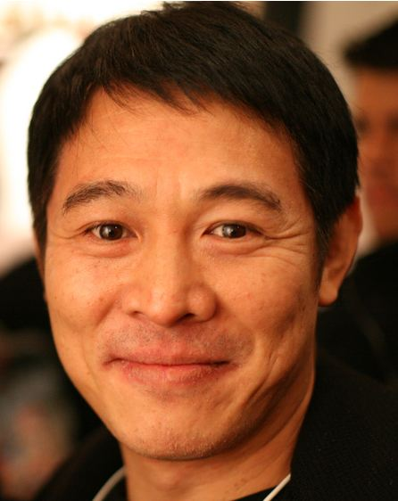

The Algorithmic Phenomenon Behind Meryl Streep and Jet Li
Every so often, digital search algorithms create unexpected cultural crossovers, prompting curious movie lovers around the world to search for meryl streep and jet li. While these two cinema legends have never shared a movie set or collaborated on a single film, their persistent pairing in online search trends highlights a fascinating intersection of cinematic mastery. Film enthusiasts browsing expansive streaming catalogs on their personal laptops frequently marvel at how two artists from drastically different cinematic traditions can simultaneously occupy the absolute zenith of global entertainment. Streep represents the ultimate high quality gold standard of Western dramatic character acting, while Li stands as an unmatched international grandmaster of martial arts action. Exploring their respective career trajectories reveals a profound comparative study in creative philosophy, physical versus dramatic discipline, and global cultural impact.
Meryl Streep: Hollywood Dramatic Chameleon
Meryl Streep has forged a legendary career defined by astounding vocal versatility, psychological depth, and painstaking preparation. From her heartbreaking, Oscar winning performances in Kramer vs Kramer and Sophie's Choice to her razor sharp comedic brilliance in The Devil Wears Prada, Streep possesses an unmatched ability to disappear completely inside her roles. Her artistic process involves mastering complex regional accents, subtle physical mannerisms, and deep psychological layers. Rather than relying on a static personal star persona, she treats every single screenplay as a full time exploration of raw human emotion. Critics, filmmakers, and worldwide audiences view her decade spanning filmography as an extraordinary masterclass in dramatic storytelling, solidifying her standing as the preeminent dramatic performer in modern cinema history.
Jet Li: Wushu Grandmaster and Action Titan
Where Streep commands the complex landscape of emotional vulnerability, Jet Li reigns supreme over kinetic, physical storytelling. Beginning his journey as a prodigal Beijing Wushu champion, Li brought staggering athleticism, speed, and fluid elegance to the big screen. His definitive portrayal of legendary martial arts folk heroes in Once Upon a Time in China completely revolutionized martial arts cinema across Asia and beyond. Later in his career, international cinematic masterpieces such as Hero and Fearless showcased his rare gift for blending lightning fast combat choreography with deep philosophical poise and quiet emotional gravity. Li elevated action filmmaking into genuine fine art, proving that physical body language can convey honor, sacrifice, and redemption just as powerfully as spoken dramatic dialogue.

Physical Precision Versus Emotional Immersion
Comparing the core artistic philosophies of Streep and Li illustrates the breathtaking breadth of cinematic craft. Streep relies on profound emotional immersion, internalizing a character's history to generate real time truth before the camera lens. Li, by contrast, relies on decades of rigorous physical discipline, transforming complex martial arts routines into spatial geometry, timing, and kinetic grace. Cinephiles listening to film scores with high performance headphones can appreciate the subtle rhythmic differences between these performance styles: Streep captivates viewers through delicate vocal shifts, breath control, and dramatic silence, whereas Li commands the screen through explosive physical movement, spatial control, and sudden poetic stillness. Both masters demand total dedication to achieve seamless performance execution.
Artistic Milestones and Industry Challenges
Throughout their legendary careers, both performers have achieved staggering artistic milestones while overcoming severe industry obstacles. Streep constantly pushed against gender biased casting stereotypes in Hollywood, securing complex lead roles for mature women during historical eras when major studios routinely underfunded female led productions. By commanding massive international box office returns, she fundamentally changed how the entertainment business values senior female talent. On the other side of the globe, Li faced the daunting challenge of bridging Asian cinema and Western mainstream media without compromising his cultural heritage or artistic dignity. He endured severe physical injuries from decades of intense stunt work, fought against restrictive studio typecasting in foreign markets, and successfully navigated non native language barriers to establish himself as an undisputed global box office draw.
Why Search Engines Bridge Divergent Cinema Icons
The modern digital landscape thrives on intriguing, unexpected juxtapositions. Search algorithms frequently pair figures like Streep and Li because artificial intelligence engines analyze broad user browsing patterns across varied film genres. Movie lovers often transition seamlessly from intense character dramas to high energy martial arts spectacles during late night home viewing sessions. Smart home technology and interconnected media applications track these eclectic viewing habits, generating fascinating cross recommendations that provoke curiosity. This algorithmic synergy highlights how modern audiences have embraced diverse cinematic forms, recognizing that supreme artistic dedication looks equally impressive whether expressed through a quiet dramatic monologue or an intricate martial arts sequence.

The Enduring Global Legacy of Cinema Masters
Ultimately, the ongoing fascination surrounding both performers demonstrates that true artistic mastery transcends stylistic boundaries, language barriers, and genre classifications. Whether a performer expresses narrative conflict through a microscopic facial expression or a breathtaking martial technique, global audiences instinctively recognize world class genius. Streep and Li have each inspired multiple generations of filmmakers, actors, and physical performers across the globe. Their parallel journeys prove that absolute devotion to one's chosen craft creates an enduring cultural legacy. They remind film lovers everywhere that cinema remains a universal language, capable of evoking deep human emotion through both dramatic intimacy and physical spectacle.
Frequently Asked Questions
Have Meryl Streep and Jet Li ever worked together on a movie project?
No, Meryl Streep and Jet Li have never co starred or collaborated on any film project. The frequent appearance of their names together online is driven by user query trends, streaming recommendation algorithms, and comparative film discussions.
What are Meryl Streep's most iconic film roles?
Meryl Streep is internationally acclaimed for her award winning performances in classic films such as Kramer vs Kramer, Sophie's Choice, The Devil Wears Prada, Out of Africa, and Doubt.
What are Jet Li's most famous martial arts movies?
Jet Li is celebrated for his legendary performances in martial arts masterpieces including Once Upon a Time in China, Hero, Fearless, Fist of Legend, and Lethal Weapon 4.
Why do users frequently search for meryl streep and jet li together?
This search query usually arises from algorithmic cross recommendations, digital movie database searches, and cinephile discussions comparing top tier masters of dramatic acting versus martial arts performance.
What martial arts disciplines did Jet Li master before acting?
Jet Li was a multiple time national champion in competitive Wushu, mastering various traditional Chinese disciplines including Changquan, Fanzi, and multiple traditional weapons systems.